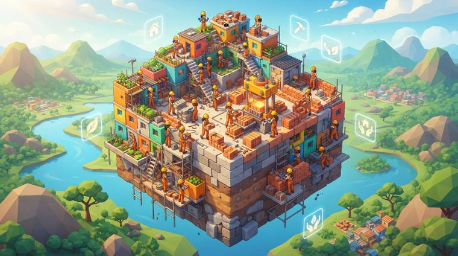
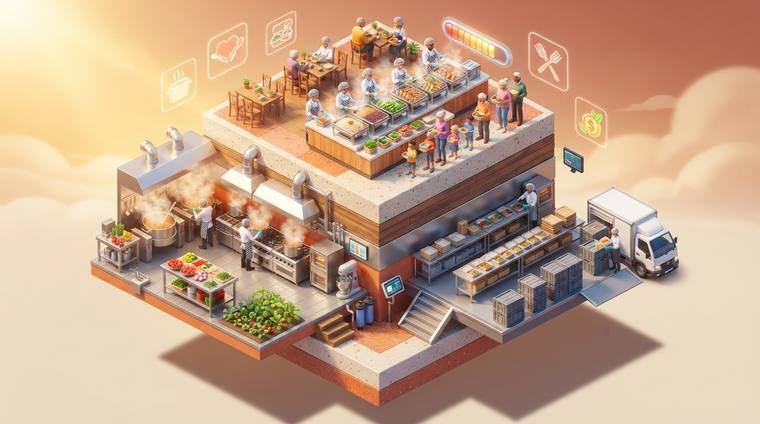
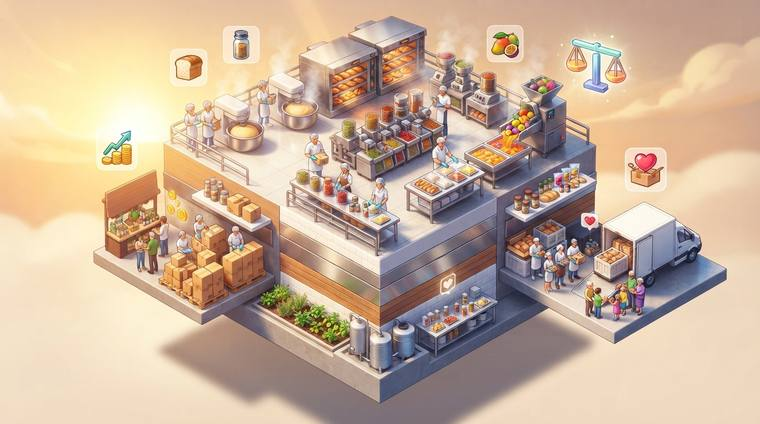
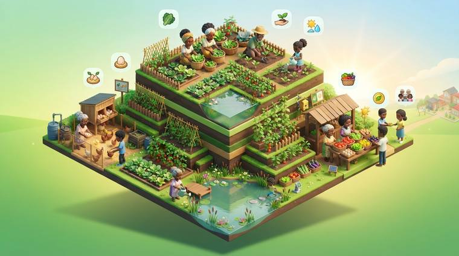
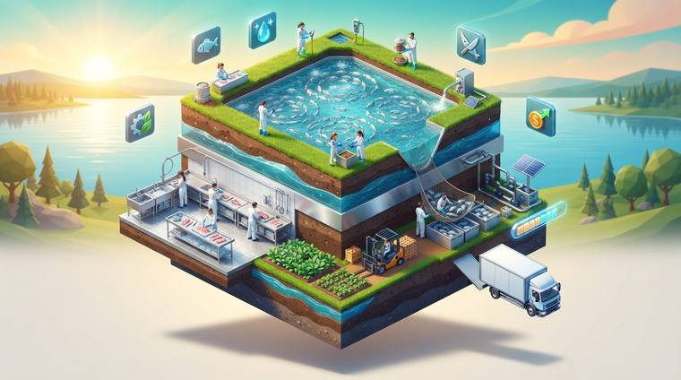
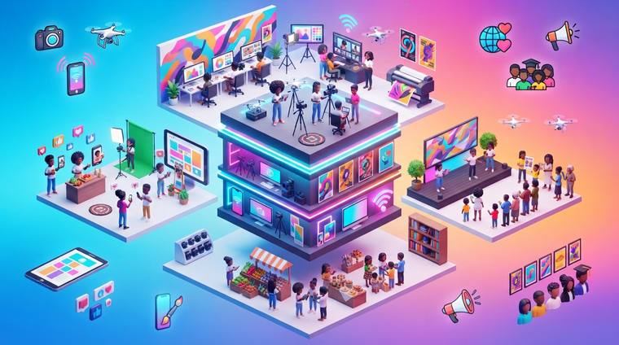
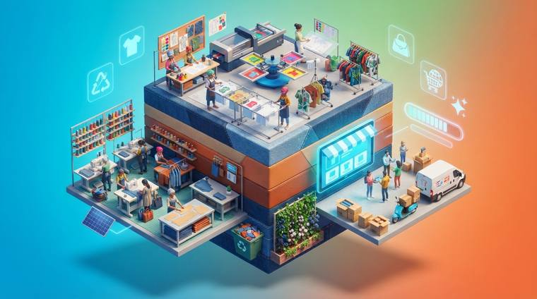
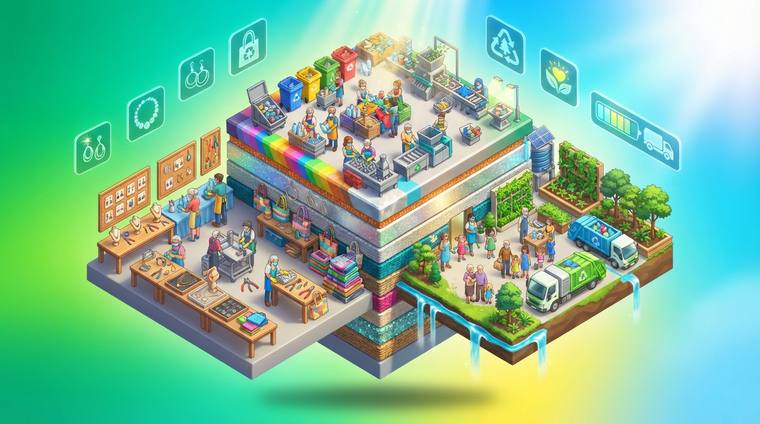
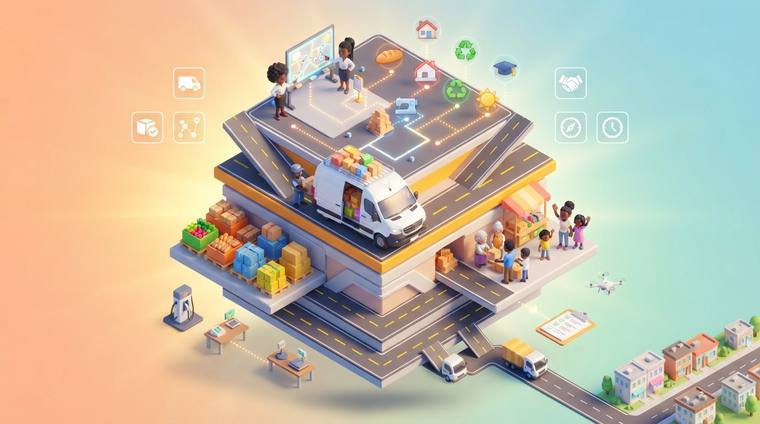

1
Você conta a ideia
Escreve do seu jeito. Por exemplo: “quero uma horta comunitária pras famílias do bairro”.
O programa sugere qual dano ela ajuda a reparar. E qual modelo de projeto é mais parecido.
Programa de computador · funciona sem internet
Você tem a ideia. A Sementeira ajuda a escrever o projeto.
Para quem foi atingido pelo rompimento da barragem de Brumadinho. Do primeiro rascunho até o documento pronto para a Governança Popular.
De graça. Nasce da luta do MAB pela reparação integral.
O que muita gente sente
A comunidade sabe do que precisa. Horta, padaria, cozinha, galpão de reciclagem. A ideia já está lá. O difícil é colocar no papel, do jeito que o acordo exige.
“A gente queria montar uma cozinha comunitária, pra dar renda pras mulheres. Mas na hora de escrever o projeto, não sabíamos o que podia e o que não podia. Nem quanto pedir. Nem como mostrar que ia se sustentar. O projeto ficou parado.”
A Sementeira encurta esse caminho. Do “eu quero” até o projeto pronto.
Como funciona
Não precisa entender de computador. O programa pergunta e você responde.
Escreve do seu jeito. Por exemplo: “quero uma horta comunitária pras famílias do bairro”.
O programa sugere qual dano ela ajuda a reparar. E qual modelo de projeto é mais parecido.
Objetivo, metas, orçamento, equipe. Tudo no formato que o acordo pede.
Você muda o que quiser. Nada vale sem o seu OK.
E mostra se o projeto se paga sozinho depois que o dinheiro acabar.
No fim, é só exportar em PDF, Word ou Excel e levar para a Governança.
Exemplo de uso
“Quero uma horta onde as famílias possam plantar e vender o que sobra, pras mulheres terem renda.”
O programa preencheu tudo. Ligou a ideia ao dano “perda de renda”. Escolheu o modelo “Horta Comunitária”. Escreveu objetivo, metas, orçamento e uma equipe de 3 pessoas.
O programa avisou. “Pagar alguém sem prazo e sem dizer de onde vem o dinheiro depois: não pode.” Maria mudou para 6 meses.
As contas fecharam. Vendendo R$ 2.000 por mês do que sobra, a horta se paga. O projeto ficou verde. Pronto para levar.
Exemplo ilustrativo, feito para mostrar como o programa funciona na prática.
O que ela avisa
A Sementeira conhece as regras do acordo. Ela confere cada linha do seu orçamento. Se alguma coisa não pode, ela avisa na hora — antes de o projeto chegar à Governança.
Quando a inteligência artificial discorda das regras, o programa mostra as duas coisas. Ele nunca resolve escondido.
Pagar salário para sempre, sem dizer de onde vem o dinheiro depois que o repasse acabar. O acordo não deixa.
Colocar no projeto uma renda que continue depois. Por exemplo: a venda do que o próprio projeto produz. É uma sugestão — você decide se aceita.
E depois?
O programa faz as contas de três jeitos. Assim você vê se o projeto se mantém sozinho. As máquinas se gastam com o tempo — isso também entra na conta.
Vende como esperado. Os custos não sobem. As máquinas duram o tempo previsto.
Os preços mudam um pouco. As máquinas se gastam. É a conta mais realista.
Vende menos e gasta mais. Mostra a hora em que o projeto aperta.
Ciclo de Lapidação
Um de cada vez, nesta ordem. Cada um lê o trabalho do anterior e melhora o projeto.
Deixa o texto do projeto mais claro.
Confere os valores e de onde vem o dinheiro.
Mostra os pontos fracos da justificativa e das metas.
Olha riscos de terra, de conflito e de sobrecarregar uma pessoa só.
Propõe melhorias concretas a partir das críticas.
Junta tudo numa versão só.
Nada muda sem você clicar em confirmar. E dá para voltar atrás em qualquer versão.
O que mais vem junto
Abra o arquivo em PDF ou Word. O programa lê e preenche os campos para você conferir.
Os projetos da região num mapa só. Mostra quem pode comprar de quem, sem sair da bacia.
Quanto entra e quanto sai, mês a mês. E o calendário de tudo que precisa acontecer.
Modelos de estatuto, ata de fundação e regimento. Um advogado precisa revisar antes de assinar.
O território
São cerca de 26 municípios. O rio, a mata e os bichos que a lama alcançou. São esses territórios que queremos melhorar.
Modelos de projeto
Escolha a que mais parece com a sua e mude o que precisar. Ou comece do zero: se a sua ideia não estiver aqui, é só escrever e a Sementeira monta o projeto do mesmo jeito.

Tijolos feitos de terra e cimento, prensados a frio, para construir casas populares.
Ver o modelo
Construção de casas e obras da comunidade, com gente da própria região trabalhando.
Ver o modelo
Refeições e marmitas congeladas para famílias que estão passando aperto.
Ver o modelo
Pães, biscoitos, polpas de fruta e temperos feitos na comunidade.
Ver o modelo
Horta sem terra, caixa d'água da chuva e criação de galinha no quintal de casa.
Ver o modelo
Peixe criado em tanque-rede, limpo e embalado ali mesmo para vender.
Ver o modeloCurso de programação para a juventude e apoio para criar aplicativos da comunidade.
Ver o modelo
Curso de rádio, vídeo e redes sociais, para a comunidade contar a própria história.
Ver o modelo
Roupa, estampa e uniforme feitos por costureiras da região.
Ver o modelo
Separação de material reciclável e artesanato feito com o que seria jogado fora.
Ver o modelo
Placas de sol que geram energia para a comunidade. O que sobra é vendido.
Ver o modelo
Transporte de gente e de carga, ligando as comunidades entre os municípios.
Ver o modeloNão achou a sua ideia? Melhor ainda. Escreva do seu jeito na primeira tela e o programa monta o projeto a partir dela.
Seus dados são seus
Nada é mandado para a internet sem você querer.
Seus projetos não saem do seu computador até você exportar e decidir compartilhar.
Só precisa de internet para usar a IA na nuvem ou pesquisar preços. O resto funciona offline.
Dá para rodar a inteligência artificial dentro do seu computador. Sem custo e sem mandar nada para fora.
Perguntas e respostas
Clique na pergunta para ver a resposta.
Não. Se você sabe abrir um programa e escrever, já dá.
A Sementeira faz uma pergunta de cada vez e você responde com as suas palavras. Não existe campo técnico para preencher sozinho.
Não. O programa é de graça e não tem mensalidade.
Se você quiser usar a inteligência artificial pela internet, alguns serviços cobram por uso. Mas dá para rodar tudo no seu computador, sem pagar nada.
É um ajudante que escreve rascunho. Você conta a ideia e ele monta um texto no formato do acordo.
Ele erra às vezes. Por isso tudo o que ele escreve aparece para você conferir e mudar. E as regras do acordo são checadas por outra parte do programa, que não erra: ela só compara com a lista do que pode e do que não pode.
Não. Ela sugere e avisa. Quem decide é você.
E depois de você, quem decide é a assembleia, a Comissão de Atingidos e a Governança Popular. A Sementeira serve para o projeto chegar lá pronto, sem precisar voltar para arrumar.
Só para baixar o programa na primeira vez.
Depois disso ele funciona sem internet. A internet só volta a ser necessária se você quiser pesquisar preços ou usar a inteligência artificial pela nuvem.
Ainda não. É um programa de computador com Windows.
Se você não tem computador em casa, dá para usar o de um ponto de apoio, de uma escola ou da associação. O arquivo do projeto fica salvo e pode ser levado num pen drive.
Para escrever o projeto, não.
O programa até gera modelos de estatuto, ata de fundação e regimento interno, para o caso de a comunidade decidir abrir uma associação. Esses modelos precisam da revisão de um advogado antes de qualquer assinatura.
Tudo bem. O programa propõe um orçamento inicial a partir da sua ideia.
Quando há internet, ele procura preços de mercado e mostra de onde tirou cada número. Sem internet, ele avisa que a pesquisa está indisponível — ele nunca inventa um valor.
É a resposta para uma pergunta simples: e quando o dinheiro do acordo acabar?
O programa faz as contas de três jeitos — se tudo der certo, se der mais ou menos e se der errado. Assim a comunidade sabe se o projeto continua de pé sozinho ou se vai parar no meio do caminho.
É a parte do acordo judicial de Brumadinho que trata dos projetos propostos pelas próprias comunidades atingidas.
É esse pedaço do acordo que diz o que um projeto precisa ter e o que ele não pode pedir. A Sementeira conhece essas regras e avisa quando alguma coisa sai da linha.
Não. Abra o arquivo dentro da Sementeira, em PDF ou Word.
O programa lê o que você já escreveu, preenche os campos e mostra tudo para você conferir. Daí em diante ele segue ajudando a completar o que falta.
Não. O projeto fica salvo no seu computador e só sai de lá quando você exporta o arquivo.
Não existe cadastro, não existe login e não existe servidor da Sementeira guardando nada.
A luta é por reparação integral. A Sementeira ajuda a escrever, na linguagem que o acordo entende, o que a comunidade já sabe que precisa.
Instalação
Baixe o programa para Windows. Depois de instalado, funciona sem internet.
Clique no botão verde. Baixe o arquivo.
Dê dois cliques no arquivo baixado.
Siga: Próximo, Próximo, Concluir. Pronto.
A página de download explica o passo a passo com calma, inclusive o que fazer se o Windows reclamar.